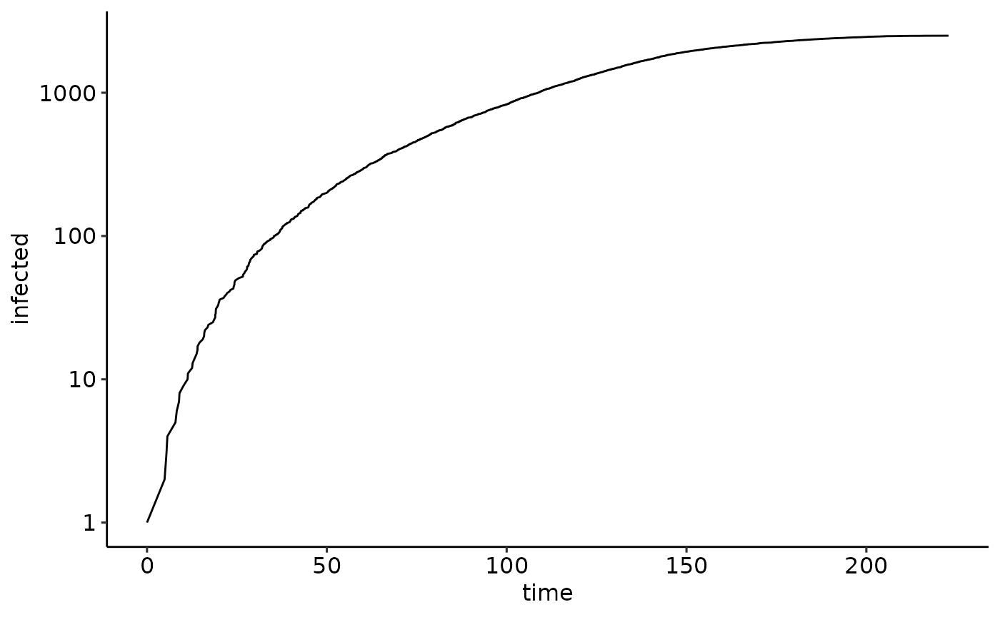
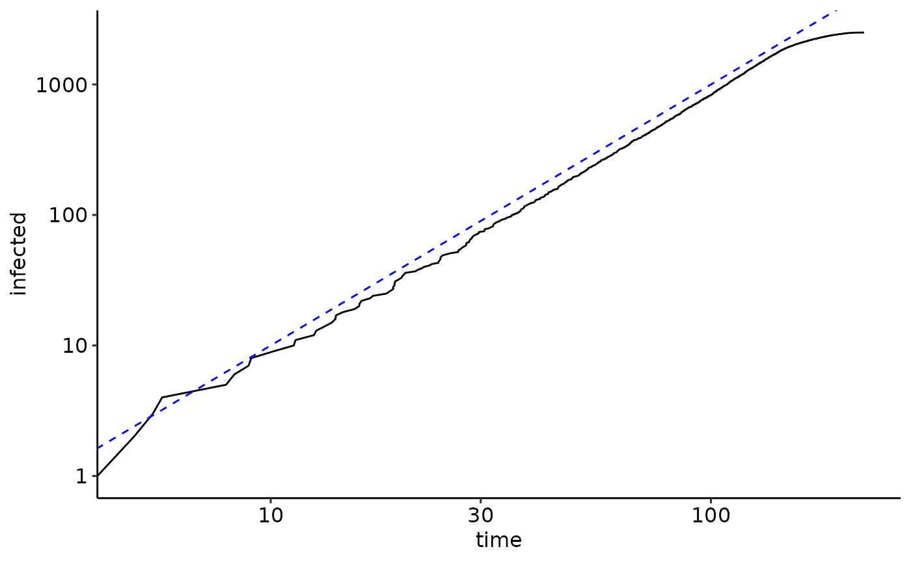
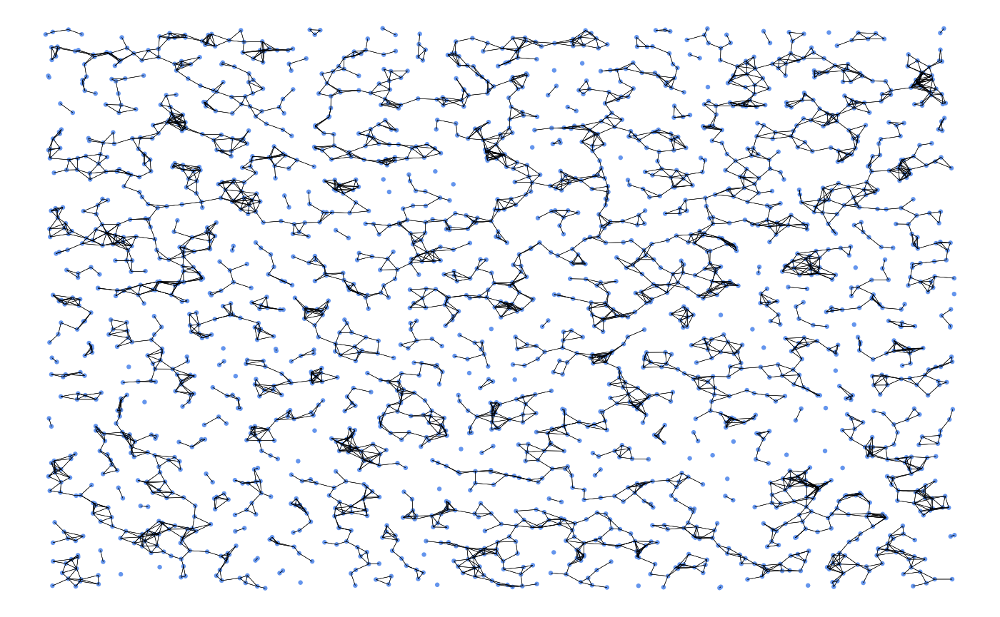

Spatial and Temporal Networks
Source:vignettes/articles/spatial_temporal_networks.Rmd
spatial_temporal_networks.RmdLoading the NEXTNetR package
We start with loading the NEXTNetR package. If the package is not already installed, see the website for installation instructions. We also load the ggplot2 and ggpubr packages for plotting and set a nice theme.
Spatial Networks
Next we create a spatially embedded network representing a cubic lattice of size \(50\times 50\), i.e. a network of nodes positioned at integral coordinates \((i,j)\) connected to their left, right, upper and lower neighbour.
L <- 50
nw <- cubiclattice2d_network(L);For spatially embedded networks such as lattices, we can query the
positions of nodes using
network_coordinates().network_coordinates()
returns a \(N \times d\) matrix, where
\(N\) is the number of nodes and \(d\) the dimension of the embedding space,
in our case 2. For convenience, we assign names to the coordinates, here
‘x’ and ‘y’.
N <- network_size(nw)
coords <- network_coordinates(nw, 1:N)
colnames(coords) <- c('x', 'y')The coordinate matrix looks like this
head(coords)
#> x y
#> [1,] -24 -24
#> [2,] -23 -24
#> [3,] -22 -24
#> [4,] -21 -24
#> [5,] -20 -24
#> [6,] -19 -24Using network_neighbour and the coordinate matrix we
just produced, we can create a matrix representing links between
nodes:
nodes_degrees <- network_outdegree(nw, 1:N)
links_nodes <- rep(1:N, times=nodes_degrees)
links_indices <- unlist(mapply(seq, from=1, to=nodes_degrees))
links <- cbind(links_nodes, network_neighbour(nw, links_nodes, links_indices))Each row of links represents a link and shows the
coordinate of the two involved nodes:
head(links)
#> links_nodes
#> [1,] 1 2
#> [2,] 1 51
#> [3,] 2 3
#> [4,] 2 1
#> [5,] 2 52
#> [6,] 3 4The two matrices coords and links make it
easy to plot the network with ggplot2.
ggplot() +
geom_point(data=coords, aes(x=x, y=y),
size=0.5) +
geom_segment(data=cbind(a=as.data.frame(coords[links[, 1],]),
b=as.data.frame(coords[links[, 2],])),
aes(x=a.x, y=a.y, xend=b.x, yend=b.y),
linewidth=0.1) +
theme_void()A plot_network function
Before we simulate the epidemic, we create a convenience function
plot_network to visualize the state of the epidemic. The
function uses simulation_isinfected() to query the infected
state of each node and show non-infected and infected nodes in different
colors. To make sure the plot encompasses the whole network, we use
network_bounds() to query to bounds of our network in space
and set the plotting limits
plot_network <- function(nw, sim=NULL) {
# Node coordinates
N <- network_size(nw)
coords <- network_coordinates(nw, 1:N)
colnames(coords) <- c('x', 'y')
# Link coordinates
nodes_degrees <- network_outdegree(nw, 1:N)
links_nodes <- rep(1:N, times=nodes_degrees)
links_indices <- unlist(mapply(seq, from=1, to=nodes_degrees))
links <- cbind(links_nodes, network_neighbour(nw, links_nodes, links_indices))
# Boundaries
bounds <- network_bounds(nw)
# Get data
infected <- if (!is.null(sim))
as.factor(simulation_isinfected(sim, 1:N))
else
as.factor(rep(FALSE, N))
data_nodes <- cbind(as.data.frame(coords),
infected=infected)
data_links <- cbind(a=as.data.frame(coords[links[, 1],]),
b=as.data.frame(coords[links[, 2],]))
# Plot network
ggplot() +
geom_point(data=data_nodes, aes(x=x, y=y, color=infected, size=infected)) +
geom_segment(data=data_links, aes(x=a.x, y=a.y, xend=b.x, yend=b.y),
linewidth=0.1) +
scale_color_manual(breaks=c(FALSE,TRUE), values=c('cornflowerblue','orange')) +
scale_size_manual(breaks=c(FALSE,TRUE), values=c(0.5, 2.0)) +
labs(color="infected", size="infected") +
lims(x=c(bounds[[1]][1], bounds[[2]][1]),
y=c(bounds[[1]][2], bounds[[2]][2])) +
theme_void() +
theme(legend.position = 'none')
}Epidemics on spatial netwoks
We now create an animation depicting the spread of an epidemic on the
lattice, starting from a single initial infection at the center of our
lattice. During each iteration of the loop, the simulation is run until
stopping time t1 and the current epidemic state is plotted.
To have the full list of events available later on, we combine the
events reported by the calls to simulation_run and merge
them into a large table at the end.
infection_time <- gamma_time(mean=6, var=4)
sim <- simulation(nw=nw, psi=infection_time)
simulation_addinfections(sim, nodes=L*floor(L/2) - L/2, times=c(0.0))
events <- list()
i <- 0
for(t1 in seq(from=0, to=250, by=5)) {
i <- i + 1
events[[i]] <- simulation_run(sim, stop=list(time=t1))
print(plot_network(nw, sim))
}
events <- do.call(rbind, events)Finally, we plot the number of infected nodes a function of time. In a log-plot, we see that the epidemic does not show a clear exponential regime
ggplot(events) +
geom_line(aes(x=time, y=infected)) +
scale_y_log10()
When we instead plot the trajectory in a log-log plot we clearly see the effect of the rather dense 2-dimensional embedding of the nodes – instead of growing exponentially, the epidemic grows quadratically.
ggplot(events) +
geom_line(aes(x=time, y=infected)) +
scale_x_log10() +
scale_y_log10() +
geom_abline(slope=2, intercept=-1, linetype='dashed', color='blue')
Temporal networks
Instead of the static network defined by
cubiclattice2d_network(), we now consider a temporal
network. On temporal networks, the set of links between nodes is a
function of time, i.e. links appear and disappear, see
help(network_types). An example of a temporal network is
brownian_proximity_temporalnetwork() where nodes diffuse
randomly in two dimensions and are at any instant connected to all nodes
within a certain radius. The density of points is chosen so that at any
instant in time, each node has on average a prescribed number of
neighbours avg_degree. Speed of movement is governed by two
diffusion constants D0 for susceptible nodes and
D1 for infected nodes which describe the average squared
distance per unit time that a node moves.
N2 <- 2500
nw2 <- brownian_proximity_temporalnetwork(
N2, avg_degree=4, D0=1.0, D1=1.0, radius=1, dt=0.05)The resulting network initially looks like this
plot_network(nw2)
Since the network is random, node indices do not correspond to the
position of nodes in the plane. However, we can use
network_coordinates to find the node closest to the center
of the plane.
bounds2 <- network_bounds(nw2)
center2 <- 0.5*bounds2[[1]] + 0.5*bounds2[[2]]
coords2 <- network_coordinates(nw2, 1:N2)
d2 <- apply(coords2, MARGIN=1, function(x) sum((x - center2)**2))
CENTERNODE2 <- which.min(d2)Epidemics on temporal networks
Epidemics on temporal networks are the same way as on static
networks, by creating a simulator object with simulation()
and calling simulation_run(). However,
simulation_run() will not not only change the epidemic
state of nodes, but also evolve the network. Contrary to the situation
on a static network, temporal networks are thus modified when
simulation_run() is called.
We now proceed as for the lattice and create an animation depicting the spread of an epidemic on a Brownian proximity network
infection_time2 <- gamma_time(mean=6, var=4)
sim2 <- simulation(nw=nw2, psi=infection_time2)
simulation_addinfections(sim2, nodes=CENTERNODE2, times=c(0.0))
events2 <- list()
i <- 0
for(t1 in seq(from=0, to=60, by=0.2)) {
i <- i + 1
events2[[i]] <- simulation_run(sim2, stop=list(time=t1, infected=N2))
print(plot_network(nw2, sim2))
}
events2 <- do.call(rbind, events2)The effect of diffusion on epidemic growth
A log-plot of the number of infected node shows that contrary to the case of a lattice, the number of infected nodes initially grows exponentially again on the Brownian proximity network, despite the fact that the average degree of nodes is 4 for both networks.
ggplot(events2) +
geom_line(aes(x=time, y=infected, color='Brownian proximity')) +
geom_line(data=events, aes(x=time, y=infected, color='lattice')) +
scale_y_log10() +
lims(x=range(events2$time))